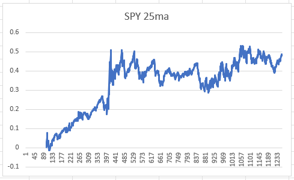
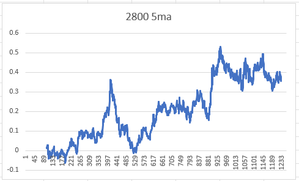
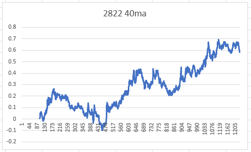
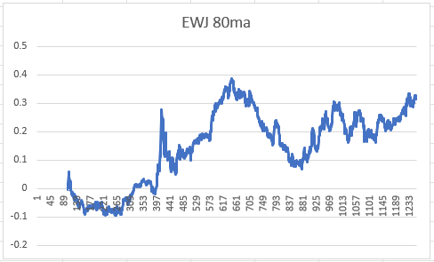
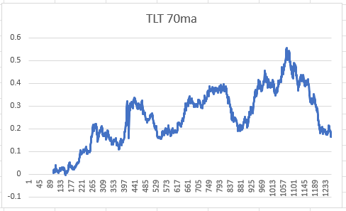
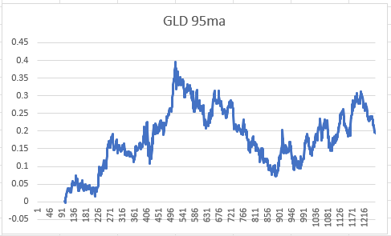
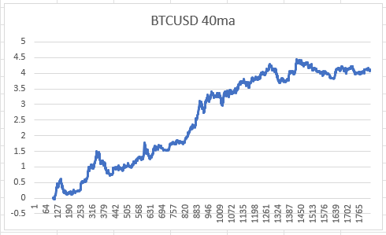
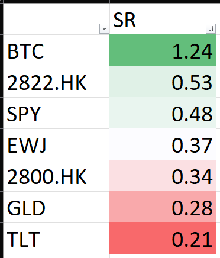

有看舊專欄的，一定對有效市場、無效市場、fair price、price discovery有所認識。我們在市場中能夠透過低買高賣獲利，是因為市場非完全有效，現價並不是fair price，因此做對判斷的你幫助市場由錯價推向合理價，市場便會獎勵你，整個過程被稱為price discovery。
所以，要賺錢，就要找出無效市場。
再舉例，例如恒指合理值20000，現價19000，那潛在錯價只有5%左右；例如比特幣合理值60000，現價30000，那潛在錯價則是100%，後者比前者更無效，alpha更大。
看到這裡，應該明白了吧。那怎樣證明一個市場好炒，容易賺錢呢？是否升得多就代表易賺易炒呢？
非也，只靠上升才賺的，行內稱為beta，beta並不穩定，一旦經濟衰退，市場出現系統性危機，那靠beta賺錢必定「乞米」。炒賣賺的，是alpha而非beta，最簡單的策略有兩個，momentum及reversion。
這次就用momentum策略來看看哪個市場較好炒。測試標的都是最有代表性的市場，分別為美股、港股、A股、日股、債券、黃金及Bitcoin。
美股代表當然是SPY，港股代表則是2800，A股拿來2822，日股則用EWJ，債券用TLT，而黃金則是GLD。
留意，不可用SPX、HSI、Nikkei 225等等，因為指數並非tradable，ETF才是tradable。
Momentum策略為，高於均線long，低於均線short。策略表現經已優化，以找出最高sharpe的ma lookback period。
Equity curve如下：







Sharpe ratio大至小如下：

會發現，傳統市場大部分資產的momentum的sharpe都只有0-0.5左右，與長揸的sharpe差不多，證明市場已經偏向有效，因此才會有人指，被動持有與主動炒賣的績效所差無幾。
讀者會發現，不出所料，炒賣Bitcoin的sharpe是最高的，亦引證了我花了大量墨水指Bitcoin出奇易炒是正確的。Bitcoin相對傳統市場來說仍然非常無效，隨手搞個策略也能有著過1的sharpe，證明回報比風險高，策略賠率好。
第二名也不出所料是A股。A股雖然已有外資滲入，但仍未全面開放，不像日股、港股般容易接觸。護城河在，因此也比其他傳統市場無效。
而債券、黃金、日股等等，則完全屬傳統市場，每日動輒過百億成交金額，極多機構投資者搶個你死我活，已經非常有效。
不要以為這個測試只顯示momentum的績效，這間接也顯示了其他策略的獲利能力。不信？你動手試試好了。